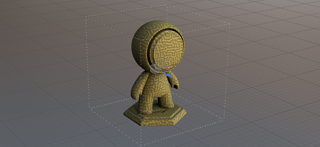

The physical size is a property inside Substance materials that defines their real size. It can be used to accurately match the size and look of materials over 3D surfaces. Painter uses centimeters as the default internal unit.
To use physical size, apply a material that has this property with a value other than 0,0,0 then enable the physical size mode in fill layer (or effect) under UV transformation > Scale.
For more information, see: